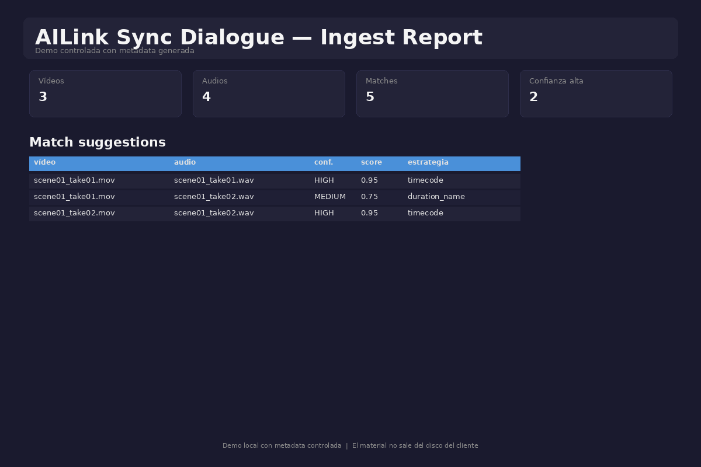
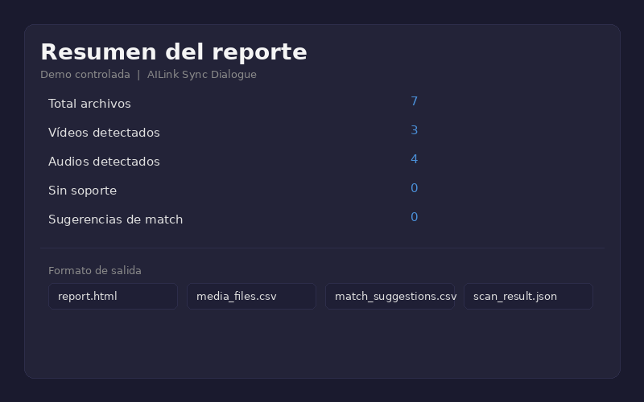
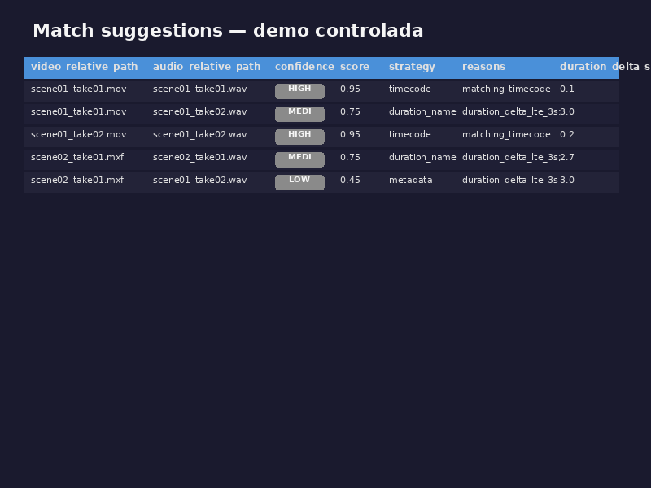
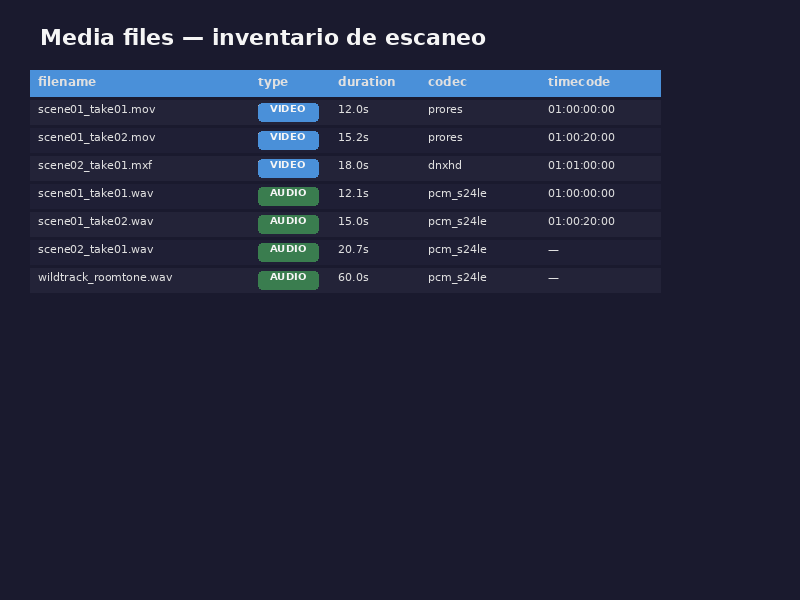
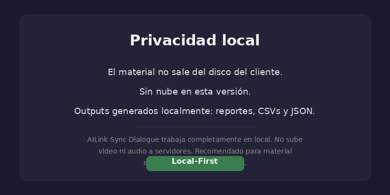
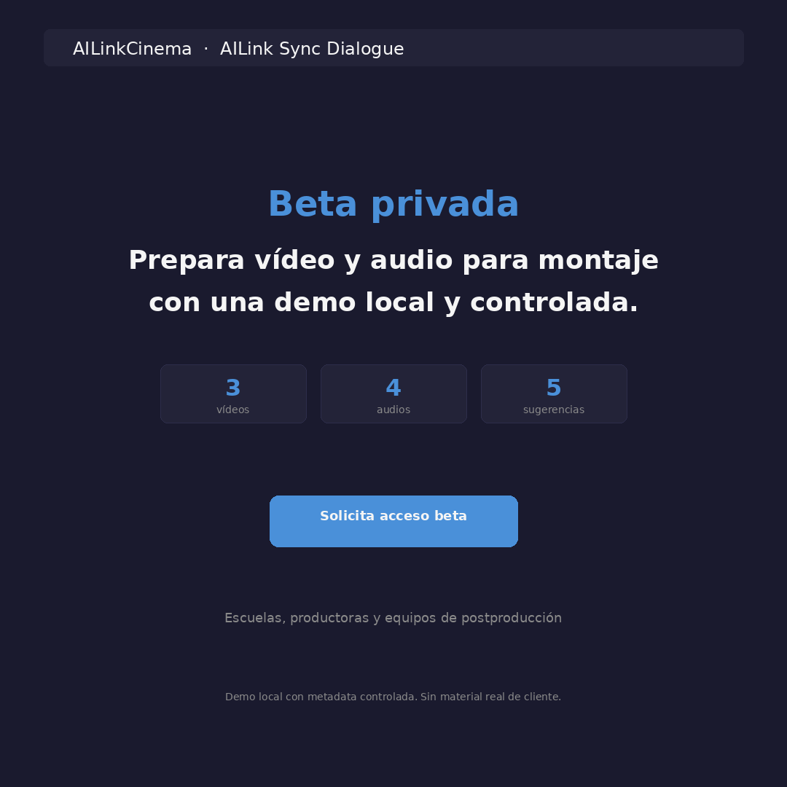

Escaneo local
Analiza una carpeta local del usuario y detecta archivos soportados de vídeo y audio.
AILink Sync Dialogue analiza carpetas locales de vídeo y audio, detecta metadata disponible y sugiere posibles matches antes de abrir el proyecto de edición. Genera informes HTML, CSV y JSON sin subir el material a la nube.
El material permanece en el disco del cliente. Sin cloud en la versión actual.

En muchos rodajes, el equipo de postproducción recibe carpetas con vídeos, audios separados, notas sueltas y metadata difícil de revisar. Esa primera revisión consume tiempo antes de que el montaje creativo pueda empezar.
Una primera capa local para convertir carpetas de rodaje en información revisable y compartible.
Analiza una carpeta local del usuario y detecta archivos soportados de vídeo y audio.
Extrae duración, timecode, fps, canales, codec y formato cuando la metadata puede leerse.
Propone posibles parejas vídeo/audio por timecode, nombre, carpeta y duración, con score y razones explicables.
Genera un reporte visual e imprimible para revisión humana, demo y comunicación con montaje.
Exporta tablas para revisión y un resultado técnico completo para integraciones futuras.
El prototipo actual no usa GPU ni cloud. Está pensado para una validación rápida del flujo.
El prototipo actual se ejecuta por CLI. La interfaz gráfica vendrá después si la beta valida utilidad real.
El usuario elige una carpeta de rodaje o proyecto.
Detecta archivos soportados y lee metadata si está disponible.
Produce matches sugeridos con confianza, score, estrategia y razones.
El equipo usa el reporte como base de revisión, no como decisión automática.
La herramienta no encierra la información en una caja negra: genera archivos simples para revisión humana.
report.htmlReporte visual para abrir en navegador.
media_files.csvTabla para revisar clips y audios en hoja de cálculo.
match_suggestions.csvLista de candidatos de sincronía con confidence, score, strategy y reasons.
scan_result.jsonExport completo para integraciones futuras o procesamiento técnico.



AILink Sync Dialogue está planteado como una herramienta local. En la versión actual, el análisis se ejecuta sobre una carpeta del usuario y los resultados se escriben en una carpeta local.

Especialmente útil para equipos que preparan material antes de entrar en el editor.
Para enseñar ingesta, organización y revisión de material sin depender de cloud.
Para tener una primera lectura del material antes de importar o sincronizar.
Para ordenar rodajes sin DIT dedicado en todos los proyectos.
Para entregar reportes claros junto al material.
Para entender vídeo, audio, metadata y candidatos de sincronía recibidos.
Para dar visibilidad rápida del material al equipo de producción y montaje.
Buscamos escuelas, productoras y equipos de postproducción que quieran probar AILink Sync Dialogue con casos controlados y feedback directo. La beta no es un producto final cerrado.
El formulario real se implementará en una fase posterior, con política de privacidad y consentimiento legal revisado antes de publicación.
Respuestas honestas para evitar promesas fuera del estado actual.
No en la versión actual. La herramienta trabaja localmente y genera outputs en la carpeta que el usuario elige.
No. El prototipo actual no usa GPU.
Todavía no hay integración directa. Hoy genera HTML, CSV y JSON que pueden servir como referencia antes de trabajar en el editor.
No. Sugiere posibles matches vídeo/audio con razones explicables. La decisión final sigue siendo del equipo de montaje.
Sí, cuando la metadata está disponible y ffprobe puede leerla. Si no hay timecode, usa señales secundarias como nombre, carpeta y duración.
Genera scan_result.json, media_files.csv, match_suggestions.csv y report.html.
Esta primera versión está pensada para validar utilidad real antes de construir instalador, interfaz gráfica e integraciones.
